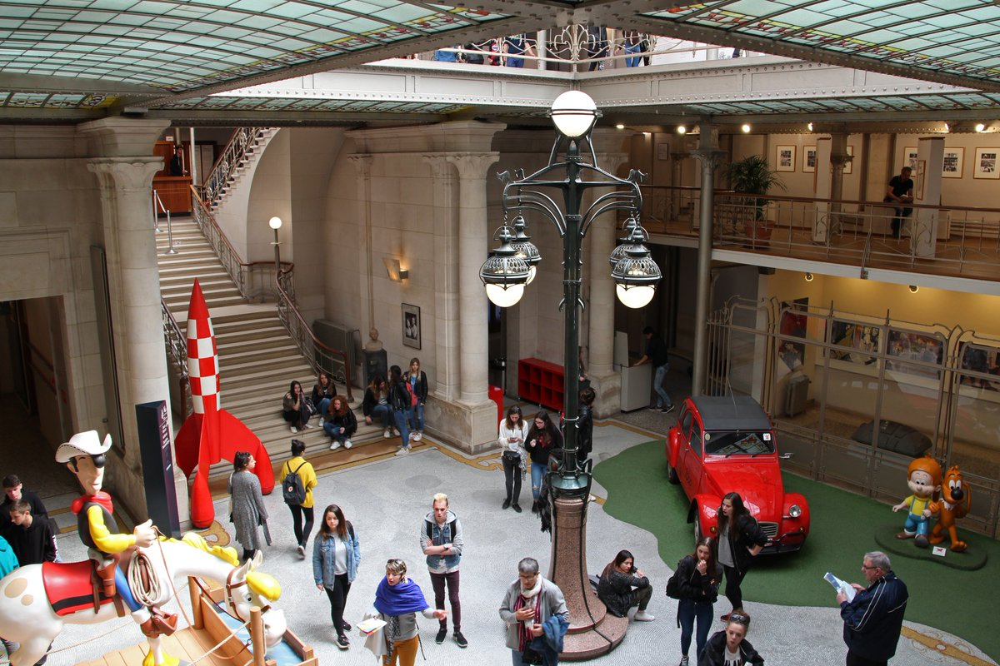

Le premier jour j’ai fait une voyage en bus. Le voyage a duré 2 heures. Quand nous sommes arrivés, nous avons mis nos affaires dans l’hôtel.
Ensuite nous sommes rassemblés sur la place devant l'hôtel. On nous a parlé des règles de l'hôtel, puis nous sommes allés faire un tour de la ville.
Nous sommes d'abord allés à l'Atomium, c'était proche de l'hôtel. Nous avons ensuite marché jusqu'au centre de la ville en passant devant une grande église.
sur le chemin du centre, il y avait un parc. il y avait beaucoup d'herbes dans ce parc. Le Strip Museum était très proche.

Vous pourrez y voir des personnages de dessins animés célèbres tels que Suske et Wiske, les Schtroumpfs, Tintin et Lucky Luuk.
 Ensuite, nous avons longé Jeanneke Pis jusqu'au musée de la ville de Bruxelles. Il était tard alors nous sommes allés dîner. J'ai mangé une pizza au salami.
Nous avons été pris en charge par le bus et sommes retournés à l'hôtel. Je suis allé dormir.
Ensuite, nous avons longé Jeanneke Pis jusqu'au musée de la ville de Bruxelles. Il était tard alors nous sommes allés dîner. J'ai mangé une pizza au salami.
Nous avons été pris en charge par le bus et sommes retournés à l'hôtel. Je suis allé dormir.